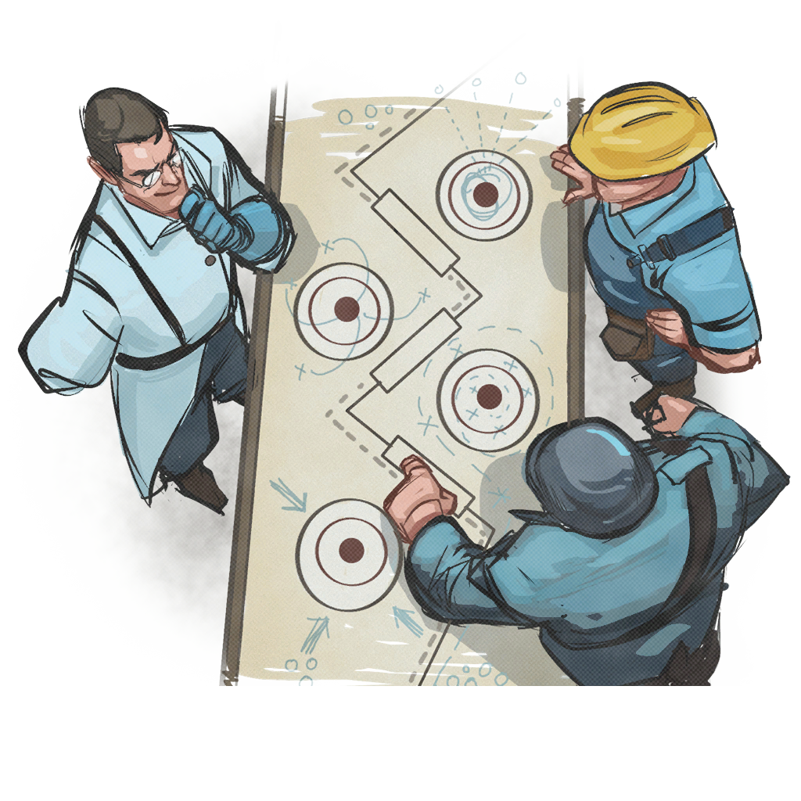

THEATER OPERATIONSLIVE FRONT DISPOSITION / COORDINATOR COPY
RED CONTROL
BLU CONTROL
--- ACTIVE FRONT

FIELD INTELLIGENCE / FILE 04-AMobilization order
not connected to a coordinator
Communications status
Steamnot checked
Authoffline
Queuenot deployed
Battlenone
Gamemain menu
P2P hostidle